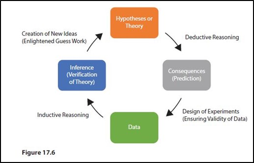
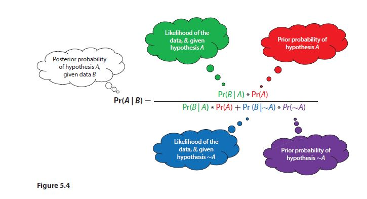
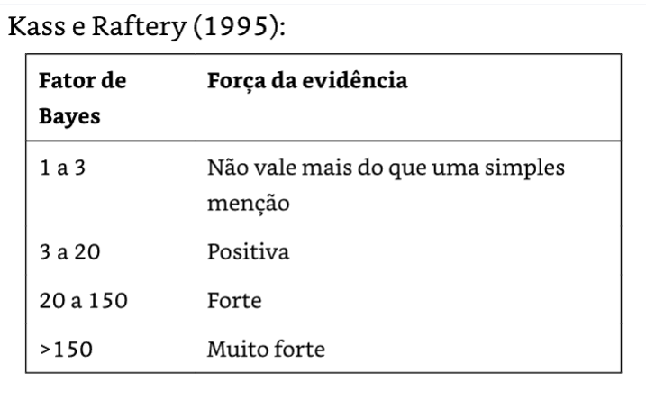

2AEID - Análise Exploratória e Inferencial de Dados
2.1 AED - Análise Exploratória de Dados
A análise de dados se refere aos métodos e estratégias para se olhar para os dados – a exploração, organização e descrição de dados com auxílio de gráficos e resumos numéricos. Sua exploração conscienciosa permite que os dados iluminem a realidade. Os Capítulos 1 ao 6 discutem a análise de dados (MOORE; NOTZ; FLIGNER, 2023 , p. 6).
2.2 Exploração de Dados (cap. 1)
“O que [nos] dizem os dados?” é a primeira pergunta que fazemos em qualquer estudo estatístico. A análise de dados responde a essa questão por meio de uma exploração ampla dos dados. As ferramentas da análise de dados são gráficos, como os histogramas e os diagramas de dispersão, e medidas numéricas, como as médias e as correlações. No entanto, ao menos tão importantes quanto as ferramentas, são os princípios que organizam nosso pensamento no exame dos dados(MOORE; NOTZ; FLIGNER, 2023 , p. 9).
Quanto aos princípios organizadores de um letramento ou pensamento estatístico, dois destacam-se na AED - Análise Exploratória de Dados:
Um dos princípios organizadores da análise de dados consiste em [P1] olhar, primeiro, um item de cada vez e, [P2] depois, as relações entre estes. Nossa apresentação segue esse princípio. Nos Capítulos 1 a 3, você estudará variáveis e suas distribuições. Os Capítulos 4 a 6 referem-se a relações entre variáveis. O Capítulo 7 faz uma revisão dessa parte do texto (MOORE; NOTZ; FLIGNER, 2023 , p. 9).
Abaixo uma figura que iluistra o Ciclo da Ciência de Dados. Não se esqueça que a Estatística é “…a Ciência dos Dados! (MOORE; NOTZ; FLIGNER, 2023 , p. 162).
Ciclo da Ciência de Dados, suas 3 fases: 1 - Wrangle (importar, organizar e transformar), 2 - Understand (Transformar, Visualizar e Modelar; buscar melhor ajuste) e 3 - Communicate (relatar) and Replicate (automatizar; app)
A fase 1 -Wrangle , quando inclusa um levantamento de dados primários, consome cerca de 80% do tempo de uma pesquisa empírica (WICKHAM; GROLEMUND, 2017, p. ix, xi, 117). Essa tarefa é uma verdadeira luta, que não costuma nos agradar.
Um similar conceito de Ciclo da Ciência de Dados (cf. Curso-R), agora associando-o aos principais pacotes do R que auxiliam cada fase ou etapa dentro de cada fase: notadamente o pacote tidyverse.
O tidyverse é um pacote guarda-chuva que consolida uma série de ferramentas que fazem parte do ciclo da ciência de dados. Fazem parte do {tidyverse} os pacotes {ggplot2}, {dplyr}, {tidyr}, {purrr}, {readr}, entre muitos outros, como é possível observar na figura.
As habilidades que, assim, espera-se de um cientista de dados são assim resumidas (GROLEMUND, 2014):
Three Core Skill sets of Data Science (GROLEMUND, 2017, p. 185)
Já a Estatística, melhor é referir-se à Probabilidade e Estatística, é conceituada como: ramo da Matemática aplicada que reune um conjunto de métodos para:
planejar estudos observacionais e experimentos aleatorizados em qualquer área do conhecimento científico, notadamente para pesquisas empíricas;
elaborar conclusões baseadas em evidências [dados e informações válidos e fidedignos] para
apoiar tomadas de decisão e para
gerir ou controlar um conjunto de ações em curso: qualidade, escala, cobertura, custos financeiros, eficiência, eficácia, efetividade etc. por meio de indicadores e de índices cuja aplicabilidade, comparabilidade, consistência e difusão possam ser testadas e validadas por uma comunidade de experts.
O Professor João Luiz Becker (BECKER, 2015) promove uma clara conceituação e distinção entre dados e informações e ilustra o ciclo em que a coleta e a extração deles inserem-se num processo mais amplo de obtenção de conhecimento, que prossegue e passa pela decisão e pela ação.
Outros conceitos importantes são o de validade e de fidedignidade dos dados coletados, que podem ser compreendidos através da ilustração a seguir:
Precisão ou Fidedignidade -x- Validade, Exatidão ou Acurácia
Conferir também a fig. 2.1 - distinção entre confiabilidade e validade, usando tiro ao alvo (Poldrack, 2025 , p. 13), que ainda conceitua validade aparente, de constructo e preditiva. Segundo esse autor:
“A confiabilidade se refere à consistência da localização dos disparos, e a validade se refere à acurácia [em sentido estrito] dos disparos em relação ao alvo”.
Perceba que, na prática, quando coletamos dados, desconhecemos a localização do alvo, ou seja, não sabemos onde se localiza o verdadeiro e desconhecido valor do parâmetro populacional de interesse.
Todavia, por meio de umaamostra probabilística de tamanho adequado (n), é possível estimar esse valor desconhecido de interesse da pesquisa, bem como sua acurácia sob a suposição uma coletaválida de dados fidedignos.
Essa suposição só se sustenta se forem tomados todos os cuidados qualitativos de um adequado processo de amostragem probabilística, como, por exemplo, baixoviés não amostral caracterizado por (BOLFARINE; BUSSAB, 2005 , p. 9, 27-28):
baixa proporção de viés de subcobertura (indivíduos não previstos no SR - Sistema de Referência), que são os erros poromissão;
baixa proporção de erros por comissão, pela inclusão de elementos de outras populações que não a população alvo ou inclusão ou substituição voluntária de elementos não sorteados na amostra probabilística (uma espécie de subamostra, de conveniência, pela escolha voluntária do pesquisador, ou mesmo probabilística, ambas contaminantes da amostra probabilística, ex.: substituir todas as k observações perdidas – não respostas ou NA’s – da amostra probabilística de tamanhon por outras k observações, escolhidas por conveniência ou mesmo quando produto de outra amostra aleatória de tamanho menork obtida da mesma população disponível);
baixa proporção de não respondentes ou NA (observações perdidas, parcial ou totalmente, no momento da coleta da amostra probabilística);
é necessário avaliar os efeitos (quantitativos, por subestimativa ou superestimativa, e qualitativos nos dados coletados) da diferença de perfil entre os respondentes e os não respondentes (NA’s);
é necessário avaliar os efeitos do eventualprocesso de imputação de dados, caso tenha sido usado para suprir informações não coletadas (NA’s), como, por exemplo, substituição dos NA’s parciais pelo valor médio ou mediano do restante dos elementos da amostra probabilística;
ausência de viés de resposta voluntária (os indivíduos da amostra escolheram-se);
ausência de viés de insuficiênia do questionário, por problemas em sua redação (má compreensão do sentido da pergunta);
ausência de viés de fraseado das perguntas no levantamento por survey (questionário fechado);
ausência de viés por efeito do entrevistador, como seu seu modo de vestir, de postar ou de falar;
ausência de viés de fraseado das perguntas no levantamento por survey (por indução de resposta no questionário fechado, ou mesmo no aberto);
ausência de erros de codificação e de digitação dos dados tabulados;
minimização dos erros de observação, ocorridos durante o processo de levantamento de dados;
minimização dos erros de medição, em razão da descalibração do instrumento utilizado ou mesmo decorrentes de sua inadequada aplicação pelo instrumentador, ocorridos durante o intervalo de tempo decorrido no processo de levantamento de dados;
etc.
Trata-se de uma lista meramente enumerativa, que não afasta a necessidade, por exemplo, de uma reflexão crítica quanto às possíveisvariáveis ocultas ou não observadas pelo quadro de variáveis que foi escolhido pelo pesquisador (geralmente produto de sua conveniência e não de uma revisão sistemática da literatura - RSL) que serviu de base para a coleta e tabulação dos dados primários levantados, seja diretamente por ele (de preferência), ou por pessoa por ele para tanto bem treinada e testada.
Apenas quando todos esses cuidados qualitativos forem tomados para prevenção contra a presença de vieses não amostrais é que se poderá validar uma coleta probabílistica de dados amostraisfidedignos.
A seguir a ideia de Ciclo da Estatística Básica Inferencial, que, após uma boa Análise Estatística Descritiva (AED) e Exploratória (AEE) dos dados, busca chegar, por meio do método indutivo, a conclusõesválidase confiáveis para toda a população amostrada a partir de umaamostra probabilísticaválidae fidedígna daquela coletada.
Ciclo da Inferência ou indução Estatística.
O emprego desse método indutivo na inferência estatística pode ser visto na indicação da seta inferior esquerda ilustrada em um mais amplo Conceito de Ciclo da Ciência, cujo formato costuma ser designado como Diamond Shape(DONOVAN; MICKEY, 2019 , p. 274-275):

Conceito de Ciclo da Ciência na forma de um Diamond Shape (DONOVAN; MICKEY, 2019, p. 274-275))
Perceba-se, na ilustração acima, a importância da articulação da prévia da teoria, de base juntamente com uma teoria rival, na busca de extração de evidências a partir de um conjunto de dados validamente coletados.
Primordial, para evitar Pràticas de Pesquisa Questionáveis – PPQ, que o pesquisador realize um pré-registro (ex.: sistema ClinicalTrials.gov.) de pelo menos um par de hipóteses, nula (H0) e alternativa (Ha), adequadamente formuladas, que ele pretende testar. Isso bem antes dele iniciar sua coleta de dados, para prevenir e evitar qualquer possibilidade de prática de HARKing (hypothesizing after the results are known) ou de p-hacking, o que possibilita que o pesquisador reformule uma conclusão post-hoccomo se fora uma predição a priori, que goza de maior confiança, dado que ele, nesse caso, estaria indevidamente reescrevendo sua teoria de partida (Poldrack, 2025 , p. 266-267), a de base e a rival, com base nos conjunto de dados coletados (uma espécie de Teorização Fundamentada em Dados - TFD ad hoc, que é obtida por meio da indução e que seria então “testada” com base no mesmo conjunto de dados donde ela, a posteriori, proveio, ou seja, sob um indevido e inválido viés de confirmação, uma vez que as hipóteses, assim reelaboradas, claramamente hão de ajustar-se aos dados colhidos), ao invés de elaborar predições ou conjecturasdeduzidas das teoriaspreviamente escolhidas, conforme muito bem ilustrado pelo retângulo superior e seta superior direita do diamond shape da figura acima.
Logo, é somente a qualidade do desenho do experimento (Design of Experiment – D.o.E. referido na seta inferior direita do mesmo diamond shape) que garante, através do consenso dos experts que atuam na específica área de conhecimento científico da pesquisa proposta, muitas vezes denominado por crivo dos pares, que vai muito além de uma avaliação independente duplo cego pelos referees dos periódicos científicos, porquanto é ônus de qualquer pesquisadordemonstrar que aderiu às seguintes boas práticas reproduzíveis de pesquisa:
▶Decidir regras para finalizar a coleta de dados antes do seu início e elencá-la no artigo.
▶Coletar, pelo menos, 20 observações por unidade de análise ou fornecer uma justificativa convincente do custo da coleta de dados.
▶Listar todas as variáveis coletadas em um estudo.
▶Relatar todas as condições experimentais, incluindo manipulações malsucedidas.
▶Elencar como seriam os resultados estatísticos incluindo as observações eliminadas, se houver.
▶Relatar os resultados estatísticos sem a covariável se uma análise incluir uma covariável.
Replicação
Um dos balizadores da ciência é o conceito de replicação — ou seja, outros pesquisadores devem ser capazes de realizar o mesmo estudo e obter o mesmo resultado. Infelizmente, conforme vimos o que aconteceu com o Reproducibility Project analisado anteriormente neste capítulo, muitas descobertas não são replicáveis.
A melhor forma de assegurar a replicabilidade de sua pesquisa é, primeiro, replicá-la por conta própria; para alguns estudos, isso não será possível, mas sempre que possível, você deve garantir que sua descoberta se sustente em uma amostra nova, que deve ter potência suficiente para encontrar o tamanho do efeito de interesse; em muitos casos, isso exigiráuma amostra maior do que a original.
É importante considerar alguns pontos quando se trata de replicação.
Primeiro, o fato de uma tentativa de replicação ser malsucedida não significa necessariamente que a descoberta original era falsa; lembre que, com o nível padrão de 80% de potência, ainda existe 1 chance em 5 de que o resultado não seja significativo, mesmo que exista um efeito verdadeiro.
Por esse motivo, queremos normalmente observar múltiplas replicações em qualquer descoberta importanteantes de decidir se devemos ou não acreditar nela e, em geral, queremos que as tentativas de replicação tenham níveis de potência maiores do que o original.
Infelizmente, muitas áreas, incluindo a Psicologia, não adotaram esse conselho [essa Regra de Boas Práticas de Pesquisa Reproduzível - PPQ] ao longo dos últimos anos, levando a descobertas“amplamente aceitas” que provavelmente se revelaram falsas.
No que diz respeito aos estudos de PES de Daryl Bem, uma grande tentativa de replicação envolvendo sete estudos não conseguiu replicar as descobertas (Galak et al, 2012).
Segundo, lembre-se de que o valor-p não nos fornece uma medida da verossimilhança de replicação de uma descoberta.
Conforme examinamos anteriormente, o valor-p é uma afirmação sobre a verossimilhança dos dados, considerando uma hipótese nula específica[sob a suposição de que Ho fosse verdadeira]; ele não indica nada sobre a probabilidade de que a descoberta seja efetivamente verdadeira (conforme aprendemos no Capítulo 11). Para saber a verossimilhança de replicação, precisamos saber a probabilidade de a descoberta ser verdadeira, o que geralmente não sabemos. (Poldrack, 2025 , p. 269-270)
Tudo isso sob pena de sua pesquisa empírica ser classificada como facilmente contestável, por adesão, voluntária ou involuntária, às Práticas de Pesquisa Questionáveis – PPQ(Poldrack, 2025 , p. 266-267).
Uma das modalidades de conceituar e aplicar a Probabilidade e Estatística é pela denominada Estatística bayesiana, ou seja, aquela apoiada no conceito de probabilidade condicional e no Teorema de Bayes, ilustrado na figura a seguir:

Teorema de Bayes para testar um par de Hipóteses (Ho: ~A e Ha: A) com suas probabilidades a priori mediadas e atualizadas por uma coleta de dados B que permite inferir as respectivas probabilidades a posteriori desse par. Que pode ser reiterado com novas coletas de dados C, D, …
A partir do conceito de probabilidade condicional e de probabilidade a priori, que se localiza no primeiro fator do numerador do lado direito da igualdade da fórmula da figura acima que presenta o Teorema de Byes, chegou-se ao conceito de Fator de Bayes (FB), que mede as razões de chance (odds ratio) entre a verossimilhança ou probabilidade a prioridos dados sob a Hipótese Alternativa (a probabilidade dos dados empíricos colhidos supondo que Ha fosse Verdadeira) em relação àverossimilhança ou probabilidade a prioridos dados sob a Hipótese Nula (a probabilidade dos dados empíricos colhidos supondo que H0 fosse Verdadeira), traduzida pela seguinte expressão:
\[ FB = \frac{p(dados|H_a)}{p(dados|H_0)} \]
Ou seja, o FB “…Fator de Bayes caracteriza a verossimilhança relativa dos dados, considerando duas hipóteses diferentes” (Poldrack, 2025 , p. 140).
Esse FB - Fator de Bayes, agora sim, é capaz de medir a força da evidência do resultado consistente na decisão pela rejeição da H0 em umTeste de Significância da Hipótese Nula (NHST - Null Huphoteses Significant Test) (Poldrack, 2025 , p. 140-142), pois:
Desse modo, um valor maior que 1 refletirá maior evidência para Smith [Ha], e um valor menor que 1 refletirá maior evidência para Jones [H0].
O fator de Bayes resultante (3325,26) fornece uma medida das evidências que os dados fornecem em relação às duas hipóteses — aqui, informa que a hipótese do senador Smithé mais fortemente respaldada pelos dados do que a hipótese do senador Jones. (Poldrack, 2025 , p. 140)
Há um critério consensual na literatura de como se deve interpretar o Fator de Bayes.
interpretando os fatores de Bayes
Como sabemos se um fator de Bayes de 2 ou de 20 é eficaz ou ineficaz?
Existe uma diretriz geral para a interpretação dos fatores de Bayes sugerida por Kass e Raftery (1995):
A tabela a seguir, cf. cap. 11 (Poldrack, 2025 , cap. 11, p. 143), resume esse critério de interpretação não discricionário, pois consensuado na literatura.
A seguir carrega-se o conjunto de dados NHANES, que é muito trabalho ao longo de todo o livro de Poldrack.
Bem como o conjunto de pacotes necessários para gerar a tabela referida.
Código
```{r}library(tidyverse)library(ggplot2)library(cowplot)library(boot)library(MASS)library(BayesFactor)library(knitr)theme_set(theme_minimal(base_size =14))set.seed(123456) # set random seed to exactly replicate results# load the NHANES data librarylibrary(NHANES)# drop duplicated IDs within the NHANES datasetNHANES <- NHANES %>% dplyr::distinct(ID, .keep_all =TRUE)NHANES_adult <- NHANES %>%drop_na(Weight) %>%subset(Age >=18)```
Salvar o data setNHANES como arquivo .csv na pasta out deste Projeto.
Código
```{r}# Salvar esse dataframe no formato binário do R na pasta out# Sua próxima importação ela virá com todos os tratamentos até aqui realizados:# tipos de colunas preservados: <char>, <date>, <time>, <fctr>, <int>,# 'A tibble': 6,779 × 76 [mais de 6 mil observações e 76 variáveis]write_rds(NHANES, file ="out/NHANES.rds") # formato binário do R# Salvar esse conjunto de dados tratado no formato .csv:write.csv(NHANES,file ="out/NHANES.csv",na ="", # salvar campos NA como espaço vazio <blank>row.names =FALSE) # não salvar coluna com números das linhas```
Conferir tabela da força do Fator de Bayes (Poldrack, 2025 , p. 143).

Interpretando os Fatores de Bayes (FB): Força da Evidência
As 2 fases, de AED (Análise Exploratória Descritiva) e de AEI (Análise Exploratória Inferencial), demandarão 20% restante do tempo de uma pesquisa (80% é gasto com a coleta, organização e tratamento dos dados primários), costumam ser-nos bem mais prazerosas.
Nessa nova fase, bem mais atraente, o objetivo é explorar os dados em busca do reconhecimento de padrões perceptíveis.
Todavia, cuidado com a possibilidade do erro percepcional ou com a prática de HARKing ou de p-haking, como já visto.
Gerar vários gráficos (barras, colunas, pizza, diagrama de ramo e folha, histogramas, boxplot, dispersão etc.) que permitam essa visualização e captura de padrões para cada tipo variável observada: categórica (nominal ou ordinal) ou quantitativa (discreta ou contínua).
A figura a seguir ilustra essa classificação dos tipos de variáveis (Escovedo, 2024 , p. 17).
Tipos de Variáveis
Resumos dos dados são muito úteis: média e desvio padrão; mediana e AIQ (Amplitude Interquartil); resumo dos 5 números, coeficiente de variação, assimetria, curtose etc.
Bem como para investigar possibilidade de associação entre elas: a depender da combinação dos seus tipos, por meio de testes estatísticos formais.
Gerar tabelas de dupla entrada ou de contigência, quando ambas forem categóricas, do tipo factor <fctr>.
Todavia, todas essas possibilidades de recorrer à Data Science e à Probabilidade e Estatística, no nosso caso, tomarão por domínio a interface do Direito com as Políticas Públicas.
2.2.1 Até breve
Dúvidas serão debeladas a cada aula!
Até nosso pRRRóximo RRRencontro!
BECKER, João Luiz. Estatística Básica: transformando dados em informação. Porto Alegre: Bookman, 2015.
BOLFARINE, Heleno; BUSSAB, Wilton de Oliveira. Elementos de amostragem. 1. ed. São Paulo: Blucher, 2005.
DONOVAN, Therese M.; MICKEY, Ruth M. Bayesian statistics for beginners. London, England: Oxford University Press, 2019.
ESCOVEDO, Tatiana. Introdução à Estatística para Ciência de Dados: Da exploração dos dados à experimentação contínua com exemplos de código em Python e R. São Paulo, SP: Aovs Sistemas De Informatica Ltda., 2024.
POLDRACK, Russell. Pensamento Estatístico: AnalisandoDados em um Mundo de Incertezas. Tradução: Cibelle Ravaglia. Rio de Janeiro, RJ: Alta Books, 2025.